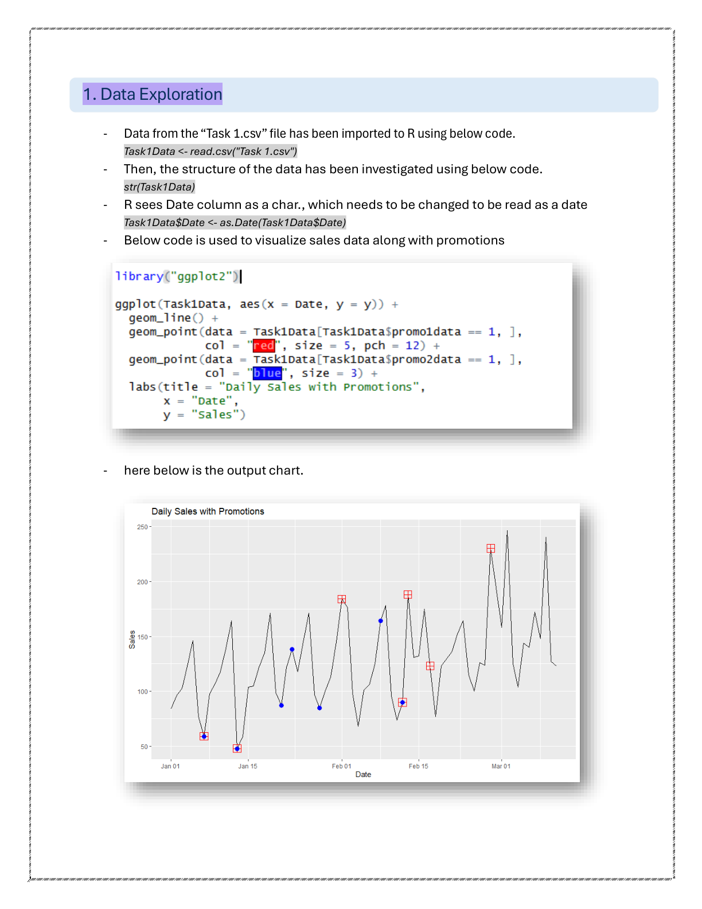
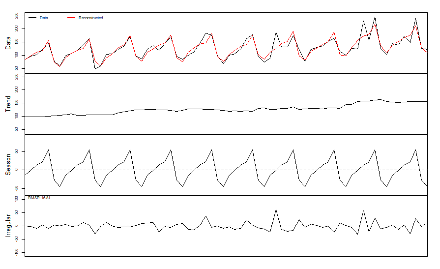

Time Series Decomposition & Promotional Impact Analysis
IIF Certified Project | Lancaster University CMAF Program
Overview
This project focused on analyzing daily sales data to understand underlying patterns and quantify the impact of promotional activities. Using time series decomposition and the ADAM framework with external regressors, I identified trend, seasonality, and promotion-driven effects, providing actionable business recommendations.
Project Scope
- 70 days of daily sales data
- Two promotional activities (Promo1, Promo2)
- Weekly seasonality pattern
- 14-day forecast horizon
Tools & Methods
- R (forecast, smooth, ggplot2)
- Time series decomposition
- ETS(M,A,A) model
- ADAM with external regressors
1. Data Loading & Exploration
The analysis begins with loading and exploring the sales data to understand its structure and characteristics.
# ============================================================
# DATA LOADING AND PREPARATION
# ============================================================
# Load required libraries
library(forecast)
library(smooth)
library(ggplot2)
library(dplyr)
# Import the sales data
sales_data <- read.csv("Task_1.csv")
# Examine structure
str(sales_data)
# 'data.frame': 70 obs. of 4 variables:
# $ Date : chr "2024-01-01" "2024-01-02" ...
# $ y : int 105 75 118 147 196 62 48 92 ...
# $ Promo1: int 0 0 0 0 0 0 1 0 ...
# $ Promo2: int 0 0 0 0 0 0 1 0 ...
# Convert date column to proper Date type
sales_data$Date <- as.Date(sales_data$Date)
# Summary statistics
summary(sales_data$y)
# Min. 1st Qu. Median Mean 3rd Qu. Max.
# 48.00 94.75 130.50 131.90 166.25 244.00
# Check promotion frequency
table(sales_data$Promo1) # 0: 56, 1: 14 (20% of days)
table(sales_data$Promo2) # 0: 61, 1: 9 (13% of days)
table(sales_data$Promo1, sales_data$Promo2)
# 0 1
# 0 53 3 <- Both off: 53 days
# 1 8 6 <- Promo1 only: 8, Both on: 6Visualization with Promotional Markers
# ============================================================
# VISUALIZE SALES WITH PROMOTIONAL ACTIVITIES
# ============================================================
# Create visualization showing promotions on the time series
ggplot(sales_data, aes(x = Date, y = y)) +
geom_line(color = "black", linewidth = 0.8) +
# Overlay Promo1 markers (red squares)
geom_point(
data = sales_data[sales_data$Promo1 == 1, ],
aes(x = Date, y = y),
color = "red", size = 5, shape = 15
) +
# Overlay Promo2 markers (blue circles)
geom_point(
data = sales_data[sales_data$Promo2 == 1, ],
aes(x = Date, y = y),
color = "blue", size = 3, shape = 16
) +
labs(
title = "Daily Sales with Promotions",
x = "Date",
y = "Sales",
caption = "Red squares = Promo1, Blue circles = Promo2"
) +
theme_minimal()
Figure 1: Daily sales with promotional activities marked (Promo1 = red squares, Promo2 = blue dots)
Key Observations
- Strong weekly seasonality: Clear repeating pattern every 7 days
- Upward trend: Sales gradually increasing over the 10-week period
- Promotional overlap: Promo1 appears on both peaks and troughs; Promo2 mostly coincides with low-sales days
2. Time Series Decomposition
# ============================================================
# TIME SERIES DECOMPOSITION
# ============================================================
# Convert to time series object with weekly frequency
sales_ts <- ts(sales_data$y, frequency = 7)
# Verify frequency detection
findfrequency(sales_data$y) # Returns 7 - confirms weekly pattern
# Perform additive decomposition using the smooth package
# decomp() provides more control than base R decompose()
dc <- decomp(
sales_ts,
decomposition = "additive",
outplot = 1 # Generate plot automatically
)
# Extract components for analysis
trend_component <- dc$trend
seasonal_component <- dc$seasonal
irregular_component <- dc$irregular
# Model fit statistics
print(paste("Decomposition RMSE:", round(dc$rmse, 2)))
# [1] "Decomposition RMSE: 16.81"
Figure 2: Additive decomposition showing data, reconstructed fit, trend, season, and irregular components
Analyzing the Trend Component
# ============================================================
# TREND ANALYSIS
# ============================================================
# Extract trend values at start and end
trend_start <- trend_component[1]
trend_end <- trend_component[length(trend_component)]
cat("Trend at start:", round(trend_start, 2), "\n")
# Trend at start: 98.29
cat("Trend at end:", round(trend_end, 2), "\n")
# Trend at end: 156.29
cat("Trend growth:", round((trend_end - trend_start) / trend_start * 100, 1), "%\n")
# Trend growth: 59.0%Seasonal Pattern Analysis
# ============================================================
# SEASONAL PATTERN EXTRACTION
# ============================================================
# Get one complete seasonal cycle (7 days)
seasonal_cycle <- seasonal_component[1:7]
day_names <- c("Mon", "Tue", "Wed", "Thu", "Fri", "Sat", "Sun")
# Create seasonal summary table
seasonal_summary <- data.frame(
Day = day_names,
Effect = round(seasonal_cycle, 1),
Interpretation = ifelse(
seasonal_cycle > 20, "Peak",
ifelse(seasonal_cycle < -20, "Trough", "Average")
)
)
print(seasonal_summary)
# Day Effect Interpretation
# 1 Mon -14.8 Average
# 2 Tue -0.7 Average
# 3 Wed 13.9 Average
# 4 Thu 21.0 Peak
# 5 Fri 55.2 Peak <- Highest sales day
# 6 Sat -28.0 Trough
# 7 Sun -45.9 Trough <- Lowest sales day| Day | Seasonal Effect | Interpretation |
|---|---|---|
| Monday | -14.8 | Below average |
| Tuesday | -0.7 | Average |
| Wednesday | +13.9 | Above average |
| Thursday | +21.0 | Above average |
| Friday | +55.2 | Peak (highest) |
| Saturday | -28.0 | Below average |
| Sunday | -45.9 | Trough (lowest) |
3. Residual Analysis & Promotional Detection
# ============================================================
# RESIDUAL ANALYSIS WITH PROMOTIONAL FLAGS
# ============================================================
# Combine residuals with promotion data
analysis_df <- data.frame(
Date = sales_data$Date,
Sales = sales_data$y,
Promo1 = sales_data$Promo1,
Promo2 = sales_data$Promo2,
Residual = as.numeric(irregular_component)
)
# Residual statistics
cat("Residual Summary:\n")
cat(" Min:", round(min(analysis_df$Residual), 1), "\n")
cat(" Max:", round(max(analysis_df$Residual), 1), "\n")
cat(" Mean:", round(mean(analysis_df$Residual), 1), "\n")
cat(" SD:", round(sd(analysis_df$Residual), 1), "\n")
# Residual Summary:
# Min: -32.3
# Max: 62.1
# Mean: 0.0
# SD: 16.8
# Filter for large residuals during promotions
large_residuals <- analysis_df %>%
filter(
(Promo1 == 1 | Promo2 == 1) &
(abs(Residual) > 20)
) %>%
arrange(Date)
print(large_residuals)
# Date Sales Promo1 Promo2 Residual
# 1 2024-01-13 48 1 1 -29.3 <- Both promos, negative
# 2 2024-02-01 184 1 0 36.7 <- Promo1 only, positive
# 3 2024-02-08 164 0 1 22.4 <- Promo2 only, positive
# 4 2024-02-12 90 1 1 -22.2 <- Both promos, negative
# 5 2024-02-13 188 1 0 62.1 <- Promo1 only, LARGE positive
# 6 2024-02-17 123 1 0 23.7 <- Promo1 only, positive
# 7 2024-02-28 230 1 0 57.7 <- Promo1 only, positive
# KEY INSIGHT: When both promotions run together, residuals are NEGATIVE
# This suggests cannibalization between the two promotions!Critical Finding: Cannibalization Effect
When Promo1 runs alone, residuals are consistently positive (+23 to +62), indicating sales lift.
When both promotions run together, residuals are negative (-22 to -29), suggesting the promotions cannibalize each other.
4. Quantifying Promotional Effects with ADAM
# ============================================================
# ADAM MODEL WITH PROMOTIONAL REGRESSORS
# ============================================================
# Prepare data as a data frame for adam()
model_data <- data.frame(
y = sales_data$y,
Promo1 = sales_data$Promo1,
Promo2 = sales_data$Promo2
)
# Fit ADAM model with multiplicative error, additive trend, additive seasonality
# Include interaction term to capture cannibalization
adam_model <- adam(
data = model_data,
model = "MAA", # Multiplicative error, Additive trend & season
lags = 7, # Weekly seasonality
formula = y ~ Promo1 * Promo2, # Include interaction term
regressors = "use" # Use regressors in both fitting and forecasting
)
# Model summary
summary(adam_model)
# Extract regressor coefficients
coef_promo1 <- coef(adam_model)["Promo1"]
coef_promo2 <- coef(adam_model)["Promo2"]
coef_interaction <- coef(adam_model)["Promo1:Promo2"]
cat("\nPromotional Effects (Multiplicative):\n")
cat(" Promo1 alone: +", round(coef_promo1 * 100, 1), "%\n")
cat(" Promo2 alone: +", round(coef_promo2 * 100, 1), "%\n")
cat(" Interaction: ", round(coef_interaction * 100, 1), "%\n")
# Promotional Effects (Multiplicative):
# Promo1 alone: +36.3%
# Promo2 alone: +15.7%
# Interaction: -75.8%
# Net effect when both promotions run together:
net_effect <- coef_promo1 + coef_promo2 + coef_interaction
cat(" Net (both): ", round(net_effect * 100, 1), "%\n")
# Net (both): -23.8% <- NEGATIVE when both run together!
# Compare AICc: ADAM with regressors vs standard ETS
ets_baseline <- adam(model_data$y, model = "MAA", lags = 7)
cat("\nModel Comparison (AICc):\n")
cat(" ADAM with promos:", round(AICc(adam_model), 1), "\n")
cat(" Standard ETS: ", round(AICc(ets_baseline), 1), "\n")
# Model Comparison (AICc):
# ADAM with promos: 558.4
# Standard ETS: 721.5 <- Much worse without promotions!ADAM Model Results
| Parameter | Estimate | Interpretation |
|---|---|---|
| Promo1 | +36.3% | Significant positive impact when run alone |
| Promo2 | +15.7% | Moderate positive impact when run alone |
| Promo1 × Promo2 | -75.8% | Strong negative interaction (cannibalization) |
5. Forecasting Methods Comparison
# ============================================================
# COMPARE SIMPLE FORECASTING METHODS
# ============================================================
# Seasonal Naive: Use same day last week as forecast
snaive_fc <- snaive(sales_ts, h = 14)
# Moving Average with k=7 (spans one seasonal cycle)
# This smooths out weekly seasonality
ma_fc <- forecast(sma(sales_ts, order = 7), h = 14)
# Simple Exponential Smoothing
ses_model <- ses(sales_ts, h = 14)
cat("SES alpha:", round(ses_model$model$par["alpha"], 4), "\n")
# SES alpha: 0.0857 <- Very low alpha = heavy smoothing
# ETS with automatic model selection
ets_model <- ets(sales_ts)
print(ets_model)
# ETS(M,A,A) selected automatically
ets_fc <- forecast(ets_model, h = 14)
# Why k=7 for Moving Average?
# k=7 averages exactly one week of data
# This cancels out the weekly seasonal pattern:
# (Mon + Tue + Wed + Thu + Fri + Sat + Sun) / 7 ≈ mean level
# Why is SES working despite seasonality?
# The very low alpha (0.0857) means SES averages across ~12 observations
# This implicitly spans nearly 2 seasonal cycles, smoothing seasonality| Method | Captures Trend? | Captures Seasonality? | Captures Promotions? |
|---|---|---|---|
| Seasonal Naïve | No | Yes | No |
| Moving Average (k=7) | No | No* | No |
| SES (α=0.086) | No | No | No |
| ETS(M,A,A) | Yes | Yes | No |
| ADAM + Regressors | Yes | Yes | Yes |
*MA with k=7 smooths out seasonality by averaging exactly one week.
6. Business Recommendations
Continue Promo1
Promo1 demonstrates statistically significant and economically meaningful uplift (+36%). It should remain the primary promotional lever.
Revise Promo2
Promo2's impact (+16%) is weaker and it tends to run on low-sales days. Investigate why it's less effective and consider repositioning.
Avoid Overlap
Running both promotions together creates cannibalization (-76% interaction). Never run both simultaneously.
Key Learnings
- Decomposition reveals hidden patterns: Without decomposition, promotional effects would be confounded with seasonality.
- Residual analysis is powerful: Large residuals aren't just noise — they often indicate external drivers like promotions.
- Interaction effects matter: The cannibalization effect would be missed without modeling the Promo1 × Promo2 interaction.
- Apparent trends can be misleading: What looked like a 60% trend was partially promotional lift.
AI Assistance Statement
Large Language Models (Claude) were used to support R coding and debugging. All analytical decisions, interpretations, and conclusions are my own.